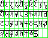
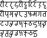
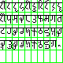
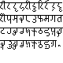
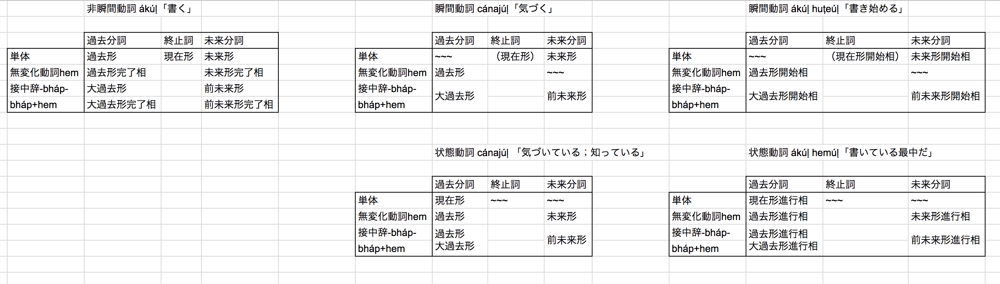

以下は考察ログであり、文法はこちらにまとめてある。
コーパスをかき集めてきたので、解読を試みよう。
語尾の情報とかを元に頑張ってみた。
語 義 品詞 同根語 Bhát バート 子音幹名詞 牌huet,藍phedu zepha 言語 母音幹名詞 牌zep1,藍chepo bháma 私たち(包括) 母音幹名詞 aṭam 神、皇帝 子音幹名詞 牌tam2,藍atam hemúl ある 動詞 牌aim2,藍aima lási 一 母音幹名詞 牌et2,藍asi ríka 二 母音幹名詞 牌ik2,藍iku dhoḷop 島 子音幹名詞 牌dop1,藍dopiai ṣibhai 国 母音幹名詞 牌sip1 ákíjam 東 子音幹名詞 牌kiak1 hem 完了の無変化動詞 無変化動詞 nána 関係代名詞 母音幹名詞 cepatepa 会話 母音幹名詞 legha 絵 母音幹名詞 牌lek1 ám 否定副詞 副詞 ká 三人称女性単数 母音幹名詞 bhoma 手 母音幹名詞 牌hop1,藍phobo bhomúl 取る、持つ 動詞 牌hop1,藍phobo káṇa 時間,時刻? 母音幹名詞 cákíkúḷ 集まる? 動詞 dhárad 連合? 子音幹名詞 hórabát 文化? 子音幹名詞 dhárad 共同体? 子音幹名詞 jó または? 助辞? sá ? 母音幹名詞 vóghit ? 子音幹名詞 cájau ? ṣóma ? 母音幹名詞 hína ? ṣíkahúḷ ? 動詞 ṣiṇṇa ? baukká ? kóli ? 母音幹名詞 aghauṭa ? 母音幹名詞 ákúḷ ? 動詞 aḍuhazóúḷ ? 動詞 há ? ko ? sujúl ? 動詞 heyáúḷ ? 動詞 ema ?
以上のを語彙集ver0と呼ぶこととする。プレーンテキストとGoogleスプレッドシートでも用意した。
まず、文字について。リパライン倉庫の表記にそぐわないやつがあるかどうか確かめる。
リパライン倉庫のに準拠するなら、ptcxkhrzmnljwbdsgyṭḍṇḷṣaiuáíúeoで書けるはずである。
-e-と-é-、-o-と-ó-は確か同一音素の表記揺れに過ぎなかったはずだから、óの登場については気にしない。
vóghitに謎のvが出てくるが、まあこれはwのことだろう。
はいOK。
不定詞語尾は-úḷのはずなのだが、PMCFショーケースの転写を見ても燐字海を見ても-úlになっている。
「実は二種類の活用がある説」とかも面白そうだが、面倒だし、単純に「面倒なので-úḷの点を打たないことがある」でよかろう。バート文字においても区別は点でなされるし。
考察が長くなったので分割。フルバージョンはこちら。以下要約。
PMCFショーケースに貼られている画像を解読したところ、デーヴァナーガリーのような「ダイアクリティカルマークで母音を表す」ではなく、母音がそれ自体で独立した字として使われていることが分かった。一方、ダイアクリティカルマークで書いている例もある。ということで、ダイアクリティカルマークで書くのを「伝統表記」、独立して表記するのを「現代表記」とすることにした。そうすればOSで実装するのも楽だし。
なるほど。
— .sozysozbot.@hsjoihs@jekto.vatimeliju (@sosoBOTpi) 2017年11月24日
1. 頑張ったけど完全には文が解読ができなかったので、単語集とかがあったら下さい
2. 文字を書いたのは誰なんだろう
1. ラネーメ祖語辞書を参照すると好い。
— Fafs/தமிழ் மாணவன் (@sashimiwiki) 2017年11月24日
2. 文字を書いたのは私ですが
ということで、ラネーメ祖語辞書を手に入れたので、解読＆転記していく。
なるほど、ákúḷは「読む」か。
cájau[後置詞]「～と共に」だそうだ。
などなどやって、暫定辞書進化版（またの名を語彙集ver1）ができた。スプレッドシートはこちら。
流石に辞書があればそれなりに読める。一部引っかかったものとか有用な情報とかを抜粋する。
ṣiṇṇa(しかし) baukká(だんだん、ゆくゆく) kóli(疲れ) -dhel(母音幹単数対格) cákík(来る 訪れる 来訪する) -akátá(指示・固有過去分詞) hem(完了の無変化動詞)
直訳するなら、「しかし、だんだん疲れを(非生物が)訪れた。」だが、これでは妙である。
DMでfafs氏と話したところ、cákík(来る 訪れる 来訪する) -akátá(指示・固有過去分詞)ではなくcákíka(訪れさせる) -kátá(指示・固有過去分詞)なのではないか、という結論になった。ということは、他動詞化語尾-aの存在が考えられる。
バート語の人称変化は主語との一致である。（fafs氏曰く、「人称変化が対格一致の言語は確か悠里に無い」とのこと。）
ということで、「〜するだろうか」が固定でzúḷ heyákáṣloであるのは、不定詞zúḷが主語となるからということのようだ。
そもそも論として、語順はSOVだったりする。パイグとかリパラインとかと違うので意識する必要あり。ただし、関係節は後置修飾である。
「Legha jó cepatepa ám hemúl ema.ってhemúḷが後置格にならなくてええんかね」と聞いたところ、「動詞不定形は名詞の曲用には従わないけど名詞節になるらしい。」となった。「emaが名詞を取る時は原則どおり後置格、不定詞を取る時は無変化、という感じかな」となった。
@sashimiwiki 「国」、ṣibhaiにします？síbhaにします？
— .sozysozbot.@hsjoihs@jekto.vatimeliju (@sosoBOTpi) 2017年11月24日
ṣibhai: Ákíjamán dhoḷopáná ṣibhaiomá dhárad
— .sozysozbot.@hsjoihs@jekto.vatimeliju (@sosoBOTpi) 2017年11月24日
síbha: Ámaom cákíkamúná síbha? ká ṣomazená káom síbhaḍi hína.
消すとめんどいので両方採用したいと思います（要するに二重語）
— .sozysozbot.@hsjoihs@jekto.vatimeliju (@sosoBOTpi) 2017年11月24日
（偶然にも）祖語辞書の例文ではṣibhaiは「国・国家」の意味でのみ、síbhaは「出身・故郷」の意味でのみ使われているので、そういう分割にします
— .sozysozbot.@hsjoihs@jekto.vatimeliju (@sosoBOTpi) 2017年11月24日
#メモ
— .sozysozbot.@hsjoihs@jekto.vatimeliju (@sosoBOTpi) 2017年11月24日
祖語辞書の「ek[助詞]らしい みたいだ」にbtと書く
#メモ
— .sozysozbot.@hsjoihs@jekto.vatimeliju (@sosoBOTpi) 2017年11月24日
nímaṣ[名詞]民族、部族 にbt
たまにバート語なのに祖語辞書でbtついてないやつがある。つらい。
@sashimiwiki Ámaom cákíkamúná síbha? 「あなたは何処の出身ですか？」における過去分詞のこの用法が謎（直接名詞を修飾できるんですかね）
— .sozysozbot.@hsjoihs@jekto.vatimeliju (@sosoBOTpi) 2017年11月24日
修飾できるのでは(分詞って言うし
— Fafs/தமிழ் மாணவன் (@sashimiwiki) 2017年11月24日
)
なるほどね（なるほどね）
— .sozysozbot.@hsjoihs@jekto.vatimeliju (@sosoBOTpi) 2017年11月24日
@sashimiwiki nímaṣáná taku 連邦 と+taku>ṣomatáku.bt[名詞]共産 集産 に出て来るtakuが分からん（そもそもバートで語頭にtが立つ例が他に無いが）
— .sozysozbot.@hsjoihs@jekto.vatimeliju (@sosoBOTpi) 2017年11月24日
takuってなんだろう
— Fafs/தமிழ் மாணவன் (@sashimiwiki) 2017年11月24日
なんだろう（理語・牌語共に発見できず）
— .sozysozbot.@hsjoihs@jekto.vatimeliju (@sosoBOTpi) 2017年11月24日
ホエール(@ransewhale)の担当言語から流れてきた何かってことにでもしようかなぁ（てきとう）
— .sozysozbot.@hsjoihs@jekto.vatimeliju (@sosoBOTpi) 2017年11月24日
ṣoma(堤 土手) +taku > ṣomatáku(共産 集産)
— .sozysozbot.@hsjoihs@jekto.vatimeliju (@sosoBOTpi) 2017年11月24日
nímaṣáná(民族たちの〜) + taku > nímaṣáná taku (連邦)
さて、なんだろう
takuってなんだろう https://t.co/lDdYw3Jjfe
— .sozysozbot.@hsjoihs@jekto.vatimeliju (@sosoBOTpi) 2017年11月24日
話は変わるが、フォントを作ってみた。
 現代表記はほぼアルファベットなので、このように比較的楽に作れるのである。
恒例のごとくPythonで分割し、JavaScriptで並べてやると
と、うまくいってくれるわけである。
せっかくなので、アリスでも載せてみるか。
なるほどなぁ。
1-4.でやったことも含め、軽くまとめてみる。
リパライン倉庫にあったKáṇa nána bháma cákíkadíha hem?「私たちが集まる時間は何時ですか？」を考えてみると、
káṇa(時間 時) nána(関係代名詞) bháma(一人称複数包括) cákík(来る 訪れる 来訪する) -adíha(一人称未来分詞) hem(～は～である)
káṇaが関係節の内側のcákíkuḷとどう関係するかは明示されていないことがわかる。ということで、明示しないという設定で確定としよう。
ちなみに、外側の動詞とのやりとりは先行詞が格変化することで示される。その例としてはká aghauṭadhel nána sáhomá woghit ákaze aḍuhazozená hem.「彼女は姉が読む本を見た。」がある。
ká(三人称女性単数) aghauṭa(本、図書) -dhel(母音幹単数対格) nána(関係代名詞 何) sá(女性 女) -homá(母音幹単数属格) woghit(兄弟、姉妹、同胞) ák(読む) -aze(三人称女性終止詞) aḍuhazo(見る 観測する) -zená(三人称女性過去分詞) hem(完了の無変化動詞)
となると、関係代名詞って格変化する必要がないな（あ、属格はあるかもね）。格変化しないということは名詞ではないに違いない。ということで、名詞nána「何」と関係代名詞nánaを別語判定しよう。
とりあえず全品詞を書き出して、それぞれに解説や解釈を書いていく。ちゃんと全例文が説明できるようにせねば。
よし、
káṇa(時間 時) nána(関係代名詞) bháma(一人称複数包括) cákík(来る 訪れる 来訪する) -adíha(一人称未来分詞) hem(～は～である)
以外は説明がついた。
hem、コピュラ用法があるらしいが、例文に他に見つからないので険しい。
コピュラどうしよう。とりあえずSOVについて軽く読んでみるか。
Relative clauses preceding the nouns to which they refer usually signals SOV word order, but the reverse does not hold: SOV languages feature prenominal and postnominal relative clauses roughly equally. -- Wikipedia contributors, "Subject–object–verb," Wikipedia, The Free Encyclopedia, https://en.wikipedia.org/w/index.php?title=Subject%E2%80%93object%E2%80%93verb&oldid=809535274 (accessed November 25, 2017).
あ、そうなん。SOVであっても、関係詞節が後置修飾なのは別に珍しくないのね。
fafs氏に訊いたところ、
káṇa(時間 時) nána(関係代名詞) bháma(一人称複数包括) cákík(来る 訪れる 来訪する) -adíha(一人称未来分詞) hem(完了の無変化動詞)
であって、「私たちが集まるであろうその時は何時か？」であるらしい。
コピュラの仕様については、
fafs「私の意図的には主 主 hemで省略して主 主になる」-- 悠里とFAFss #ラネーメ
ということらしいので、それでいこう。
バート語の音韻についても、ちゃんとまとまっていなかった気がするのでまとめたい。
j.v「思ってたのだが、s[z]なのにṣ[ʂ]なのって謎では？現世転写としてならともかくバート文字としては。」 fafs「たしかに」 j.v「『cに点』に変更しようかね」 fafs「s.y.に確認しておきましょ？」 j.v「ですな」 qafopwa「あー、s.になってるのか」 qafopwa「c.でええんやない？」-- 悠里とFAFss #ラネーメ
j.v「バート文字、バート語に存在するkh用の文字がないやん」 fafs「な、なんだってー！？」 j.v「ないです。そして語はあります（khak「父」）」 fafs「kに点を打つのが統一感あってよさげ」-- 悠里とFAFss #ラネーメ
ということで、音韻をまとめていたと思ったら文字を改定していた。フォントとか直さねばなぁ。
ちゃんと音韻もまとめたぞい
とりあえず、ṣとkhに対処せねばな。あと、ビットマップフォントのbhが微妙に気に入らないのでそれを直そう。
まず、過去ログを破壊しないようにすべく、古いやつを_oldというのに改名。
そして書く。
 「考察する」をinvestigate.htmlに改名して、index.htmlにはリンク集を貼ることにした。
これで多少はアクセスしやすくなったはずだが、まあまだまだ足らんよなぁ
1-4-8.にあるtaku問題について。
牌tak1や藍taku「服、布」と同根であって、祖語では「縫う」とかの語義も含んでおり、「流れ、繋がり」のような語義としてバート語に入ったという説になった。
ただし、これは（珍しいことに）バート語固有の単語ではなく、後世に周辺言語から借用したものだという説が濃厚となった。以下にその理由をいくつか挙げる。
なお、nuttaはファスマレー(改定試験に通過)ではnuddadだそうで、「重子音は清音のみ許容」という（通言語的にも自然っぽさある）音韻規則があると思われる。ちなみに、重子音の他の例としてはsakkáやnínaccú, accúḷ, rakkúḷなどが挙げられる。woghitについては、まあコーダならtになっても何らおかしくないでしょ。*fokjutだし。アイルでdadoである語はバートではdháradなので、別に有声阻害音を禁じてはいないっぽいが。（今の所コーダに立ってるのはlḷmntzpkṣdであり、dhárad以外は流音か無声かという風潮ではあるが、まあ主格以外は後ろに母音が来るわけだし、普通に保たれたんでしょ）
さて、takuが解決したので、ついに暫定辞書をver2にできる。
語彙集(ver2)csv 語彙集(ver2)csv Googleスプレッドシート
さて、とりあえずOTM-JSON化しますかね
しました。
特に違いは意図していないらしい。ただ、コーパス見るに一般名詞は-homáになりやすく代名詞は-omになりやすいらしい。
肯否疑問文決めてなかった。アイル語とかタカン語とかでどう言うんだろう。
とりあえず、パイグ語のA y mun1? > A yn2?に倣ってA jo ám?でいいか。
hemは鼻母音で読んで良いという話を聞いていたので、音韻メモに追記した。あと、-úḷが-úlとも書かれる話についても記載した。
例文を見ながら、細かい点を記載していく。
「アリス」のlásihomá káṇa jo ríkahomá káṇaḍi hínaを根拠に、「数詞の属格 + 名詞」で「A個のB」であることを明記。また、複数の名詞をjoで結んだときに格変化するのが後ろだけであることも分かるので、それも記載。
「感動詞」と「間投詞」を「間投詞」で統一。辞書も祖語辞書もそうした。
「高低（というか高低と強弱の中間みたいな感じだな。イントネーションですな）をどう付けるか」というのを、PMCFショーケースの動画も参考に設定してみた。作業の様子はこちらにログを残してある。
あと、母音幹単数対格の-dhelが2音節で読まれているので、そういう規則にしよう。語末の-lは[ɾə]と読むということに。あと、普通に語中のlが[ɾ]でも読まれてる気がする。
あ、-úḷが-úlとも書かれる理由ってそれか。本来の語末lは[ɾə]であって[l]ではないので、[uːɭ]と読んでも[uːl]と読んでも通じるのか、なるほど。
ならaはシュワーでは読まんだろうな。æもeっぽさあるし用例ないし不採用でいいか。
とりあえず雑に統合、古いやつはリダイレクトに。
fafs氏と話し、aに[ə]と[æ]を復活させ、wに[v]と[w]を足した。
「冠光―アイル共和国国歌」が漏れていたのでコーパスに収録した。bhán voghitináとなっている箇所をvoghitiná bhánと直してもらった。
また、表記揺れを解消した「正規化コーパス」を作成。
さらに、新たに登場した間投詞áを辞書登録。
1.4.5でsíbhaを「出身, 故郷」、ṣibhaiを「国, 国家」と分離したが、「冠光」ではsíbhaを「国」という用法で用いている。ということで、síbhaは「出身, 故郷, (我が)国」という意味の日常的な語であり、ṣibhaiは「国家」というような感じの比較的正式な語といった風にしよう。
文法書に文字の画像と情報を追加。
文法書をリパライン倉庫のページ（ミラー）の完全上位互換にしたいし、「文化情報」みたいな欄も作るか。文法書としてどうかという話は置いておいて。
まず概要欄を転記。
名前の欄もコピー。
造語とか語法考察とかやっていくよ
hemは無変化動詞なので、過去分詞や未来分詞を形成できない。ということで、「〜であった」とか言いたいときには補充形を使いそうである。さて、何が用いられるだろう、と考えたところ、パイグ語bap「同じ」の同根が使えそうだという気がしてきた。えーと祖語はbaepか。
さて、格支配どうしよう。日本語は「AがBと同じ」、韓国語は「A가 B와 같다」、英語は"A is the same as B", "A is identical to B", "A equals B"、フランス語は"A est identique à B", "A égale B" （mêmeは "A faire le même C que B" という風に使うっぽいので除外）、アラビア語はよくわからんけどとりあえず対格とるっぽい、タミル語はfafs氏曰くA மற்றும் B ஒன்றுதான்だそうで、『「～も～も」って感じ』だそうな。
まあ、通言語的に対格で取らない傾向がそこそこ強いのかもしれない（なお6言語では統計取れるほどの言語数に全くもって届いていない模様）が、égalerとか見るに対格も普通にありそうだな。
j.v「A is the same as BもA is identical to BもA equals Bもあるし、パイグに合わせればええやろ（ええやろ）」 fafs「パイグに合せすぎるなよ(系統細かくは違うんだから)」 j.v「アイル語の文法書と語法書が待ち望まれる」 j.v「タカンも」
ということで、迷った時の鉄則 †ダイスロール† を使うことにした。えーと、実質対格・hínaの2択だと思うので、1, 2, 3なら対格、4, 5, 6ならhína。
6。ということでhínaになった。さて、あとは祖語baepがどうなるか。
| 唇音 | 歯茎音 | そり舌音 | 軟口蓋音 | |||||
| 鼻音 | m | |||||||
| 破裂音 | t | d | k, kk | |||||
| gh | ||||||||
| 摩擦音 | cc | h | ||||||
| 接近音 | ||||||||
| ふるえ音 | r | |||||||
| z | j |
ということで、bhápúḷ「〜と(hína)同じである」を立てることにしよう。hemの補充形としての役割も果たすという感じで。
んー、もっと漂白してコピュラにしてもいいか。ラテン語stō「私は立つ」が後世でコピュラ化した例もあることだし。
ということで、面白いのでコピュラにしていきたいと思う。bhápúḷ「〜(hína)である」なので、例えば「かつて土手であった土地・領域」はṣomaḍi hína bhápakátá epaとかepa nána ṣomaḍi hína bhápakátáとか表せることになる。
「バート語、時間あたりの情報量密度がかなり低くないか？」と思ったので「アリス」で検証してみよう。単母音・ai・auを1、長母音を2として数えると、"alic sáhomá woghiti cájau ṣomaḍi hína ṣíkahazená hem. ṣiṇṇa, baukká kolidhel cákíkakátá hem."は53で、
アリスは川辺でおねえさんのよこにすわって、なんにもすることがないのでとても退屈しはじめていました。日本語訳（© 1999 山形浩生；クリエイティブ・コモンズ・ライセンス）
は50。ということで、「低いっちゃ低いけど日本語もそんなもんやろ」という感じか。子音クラスタもないし閉音節も限定的だし、まあそんなもんでしょ。たった1文で判断するのもアレだが。
そういえば、「〜から」って造語してないなぁ。作らねば。パイグ語でsak2だし、祖語srakkqから作ることになるのかなぁ。
と思ったら祖語にwosle「〜から」という語があるらしい。タカンではocaだそうだ。じゃあそっちから作るか。
ということで、後置詞oṣa「〜から」を造語。
祖語dradqngを見てみると、
dradqng 集団、団体 dado.ar[名詞]集まり drad>dat2.pk[名詞][動詞]集まり、集団、団体、集まる、集める >dhárad.bt[名詞]連合、連邦、党 dad ng.fs[名詞]集まり、集団、団体 tadu.tk[名詞]集まり、集団、団体
となっていて、-ngの根拠は改定前ファスマレーのdad ngしかない。改定前ファスマレーは滅ぼすことになったので、必然的に-ngの根拠もなくなり、祖語はdradqだったということになった。
造語とか語法考察とかやっていくよpart2
祖語辞書の記載が「ema[後置詞]～のような ～のように (動詞不定形に続いて)～なんて」となっていたので、辞書も修正。
さて、「～のような」って書いてあるけど、「AのようなB」ってどう言うんだろうね。連体修飾って属格と関係詞節と分詞しかないけど。
「AのようなB」ってなんだろう。パイグ語「如」に対応するわけだから比況がメインだろうけど。
「Aに似たB」かなぁ。「火のような色」とか「宝石箱のような景色」とか「子供のような振る舞い」とか。
「AのBに似たB」（「火の色に似た色」「子供の振る舞いに似た振る舞い」）パターンと、「Aそのものに比喩的に似たB」（「宝石箱のような景色」）パターンがあるな。比況と例示の違いなのか？（わかっていない）
「子供のような振る舞い」は「子供のように振る舞う」の名詞化として捉えられるから、emaの意味範囲に収まりそうだよなぁ。「子供のように描く」＝「子供が描くように描く」はghátuḍi ema leghúḷだが、「子供のような絵」はどうするか。「子供の描いたような絵」をそのまま訳せばghátuḍi ema leghadína/leghamúná/leghazená/leghabáta leghaと冗長である。まあ代動詞を使えばghátuḍi ema zadína/zamúná/zazená/zabáta leghaと、人称変化がある言語なので過去分詞を使うと作者を特定することになってしまう。
目の前に「子供のような絵」があってもその作者は明らかとは限らないわけで、もっと動作主を漂白した表現が必要である。
別の方面で考えてみよう。
パイグなら「彼は子供のように描く」が「彼如子筆絵」で「子供のような絵」が「如子絵」とか「如子之絵」とかだろう。「タカンのような人」を「如takan」と書いている用例もあるなぁ。とはいえ、「如子之絵」を*ghátuḍi emahomá leghaみたいするのもアレだし。
となると、普通に「AはBに似ている・AはまるでBのようである」（Bは対格）という動詞を立てるのが無難な気がしてきた。なんか使えるのないかなーと思ったら牌cei2,藍ceixei「近」が使えそうだということになった。
ラネーメ祖語に再構されていないので、古パイグsreiを基準にしよう。
s.yと話し合ったところ、祖語形はcrqiでよかろうということになった。その過程で参考にした要素は以下の通り。
さてこれがバートでどうなることやら。動詞なので-úḷがつくことを考えると、*sui > sujúḷから類推するに-júḷなのは確定だろう。末尾でない*qはaになりやすい(*qtaa > adha、*pqra > bhára、*sipql > síbha, ṣibhai）のでaかáかだな、さてどうしよう。
ダイスロールするか。奇数ならa、偶数ならá。3。ということで-ajúḷ。
cr-については、*dradq > dhárad、*srakkq > cákíkúḷから考えるに、c-でいいだろう。
ということで、cajúḷ「AはBに似ている・AはまるでBのようである」を立てよう。さて、対格かhínaか。原義「近い」ならhínaだろ。よし決定。
ついでに、「「「助詞」」」ek「〜らしい, 〜みたいだ」について考えるか。同根語はパイグ「光」とかだなぁ。例文では伝聞で使ってるけど、これって果たして伝聞・推定でしか使えないんだろうか。日本語の語釈だと比況ともとれてしまうが、それだとemaと被るからなぁ。そもそもこの「助詞」ってなんなんだ「助詞」って。まあ終助詞「かしら」みたいなもんと考えればそこまで無理なネーミングではないかもだが。
しかし、文末でしか使えないのかね。「難しいと聞く手術」みたいな言い方ができたら便利ではあるが、まあそういうの表現するのには別の表現を使いそうだなぁ
祖語辞書を「助詞」から「終助詞」に変更、辞書と文法書も変更。
「冠光」足したときに言及し忘れていたが、歌などの場合は動詞の後に名詞が来たり格語尾が落とされたりすることがあることを文法書に書いておこう。格がしっかりしている言語で格語尾が落とせるというのも一見不思議な話だが、まあラネーメですしおすし。
というかṣomaúḷって敬礼の対象を具格に取るのか、謎だ（謎だ）
まあ日本語の「〜である」の「〜で」も形態上具格っぽく見えたりするかもしれないし、そんなもんでしょ（？）
調べてみたらロシア語の具格の用法が思いの外広かった。うむ、全く問題なさそうだな。
文法書の「イントネーション」で出てくる文節が2つの単語から構成されるのは「名詞後置格+後置詞」「不定詞+後置詞」「名詞主格+接続詞」だが、ここでいう接続詞は文と文を繋ぐṣiṇṇa(しかし)などではなく名詞と名詞を繋ぐjo(または)などである。
もしかするとṣiṇṇaに名詞と名詞を繋ぐ用法があったりするかもしれないが、そうでないなら品詞の名前は分離したい。
「文接続詞」vs.「名詞接続詞」でいいか。
長くなったし、アドベントカレンダーの記事にもしたいので分離。
まとめた表がこちら。
造語とか語法考察とかやっていくよpart3
ないですね。パイグとかは「此」で言えるんだろうけど。（あれ、辞書に載ってない。足しとかねば）
j.v「代名詞も考えたんだけど、『彼(かれ)の時』と『この時』って別物な気がするんよ」 fafs「なるほどなぁ。…いや、でも『彼(か)の時』と読めば」 j.v「それは思ったけど、人称変化を変える民族なわけだし分かれそうな気が。ということで日本語の連体詞・韓国語の冠形詞と同様の『形容詞』判定にしたい」-- Skype通話
と思ったら、パイグ「此」と同根なのはバートではko「これ」だから人称は問題ないやん。
あ、そうだ、ko -omの縮約でkomとして形容詞として辞書に載せよう。「これの」はkohomáですな。
ghが[ɡʱ]じゃなくて[ɣ]になってしまう傾向があるので、異音として許容することにした。
辞書にある動詞を「動作動詞」「瞬間動詞」「状態動詞」に分けていこう。「瞬間動詞」「状態動詞」にする場合は例文と要相談。
| 単語 | 語義 | 判定 |
| accúḷ | 書く | 動作動詞 |
| aḍuhazoúḷ | 見る, 観測する | 動作動詞 |
| ákúḷ | 読む | 動作動詞 |
| bhárúḷ | 風が吹く、感染症にかかる、風邪になる、病気になる、カビが生える | 瞬間動詞[0][1] |
| bhátúḷ | ～を話す、喋る | 動作動詞[2] |
| bhomúḷ | 取る、持つ | 瞬間動詞[0][3] |
| bohúḷ | 行く | 動作動詞 |
| 去る | 瞬間動詞[3][4] | |
| cákíkaúḷ | 〜を訪れさせる | 動作動詞 |
| cákíkúḷ | 来る、訪れる、来訪する | 動作動詞 |
| 〜(oṣa)が出身地である | 状態動詞[5] | |
| hemúḷ | ある、存在する | 状態動詞[6] |
| horúḷ | 書く、記録する | 動作動詞 |
| kádúḷ | 光る、目立つ、〜が分かる | 瞬間動詞[0] |
| leghúḷ | 絵を描く | 動作動詞 |
| rakkúḷ | 生きる、生存する | 状態動詞[7] |
| ṣíkahúḷ | 座る | 瞬間動詞[0][8] |
| ṣomaúḷ | 〜(具格)に対して敬礼する | 動作動詞 |
| ṣomúḷ | 積む、積み上げる、功績を上げる、結果を出す | 動作動詞 |
| sujúḷ | 使う、利用する | 動作動詞 |
| suúḷ | 商う、商売をする | 状態動詞[9] |
| zeúḷ | 巻く、回す | 動作動詞 |
| zúḷ | する、行なう | 動作動詞 |
| bhápúḷ | 〜(hína)である | 状態動詞 |
| cajúḷ | 〜(hína)に似ている・まるで〜(hína)のようである | 状態動詞 |
さて、ここまではいい。残るはheyáúḷ「思う、(動詞節を取ってheyákáṣlo)～だろうか」である。例文を見てみるか。
後者は動作動詞の過去形完了相でいいでしょ。ちなみにユーゴック語は現在時制完了相らしい。まあバート語にそんなものはない。さて、問題は前者である。
単純にして、kodhel sujúḷ heyákáṣlo.「これを使うだろう。」を考えよう。逐語訳すると、「これを使うことがheyáúḷするだろう。」うーん。
考えたが、良い案が思いつかないので、単純に「動詞」とすることにした。だって未来形でしか使わないもん。
さて、これで終わり…と思ったが、前に造語したhuṭeúḷ「始まる」とcánajúḷ「気づく、知る；気づいている、知っている」を辞書に足さねば。「始まる」と「気づく、知る」はは瞬間動詞、「気づいている、知っている」は状態動詞。
造語されていないなぁ。というかthis/thatなのか「これ」「それ」「あれ」なのかも考えなきゃ。
タカンは3つらしい、じゃあバートも3つでしょ。
| 意味 | パイグ | タカン | アイル | バート |
| これ | ka1 | ka | ko | |
| それ | ze1 | ti | tisi | |
| あれ | zap2 | ki | kisi | |
| どれ | nan2 | cu | susi | nána |
タカンでiになるやつってバートだとどうなんだろう。アイルのinusiがタカンでinuci、パイグでnut2だったりするそうな。アイルnimutu、タカンnicu、パイグnim2、バートnímaṣというパターンも。
考えるのが面倒になってきたので、tíとkíで確定させてしまえ。
kíは「彼」に衝突するなぁ。まあいいか。人称変化するから人なのか物なのか分かるし。
複数形どうしよう。「彼」の場合は複数はkíṣloだけど、「あれ」の場合はkízáになったりするのだろうか？
逆に、koやtíがkoṣloやtíṣloとなるという説も面白そうだな。
よし、ダイスロール！
2が出た。ということで、規則複数で行きましょう。
あ、そういえば「彼ら」ってkíṣloじゃなくてkiṣloなのか、知らなかった。
-báṣlo, -káṣloがóになっていたのを修正。
時制のところを執筆。
そり舌音の後のiは当然[ɨ]なのでそれを加筆。